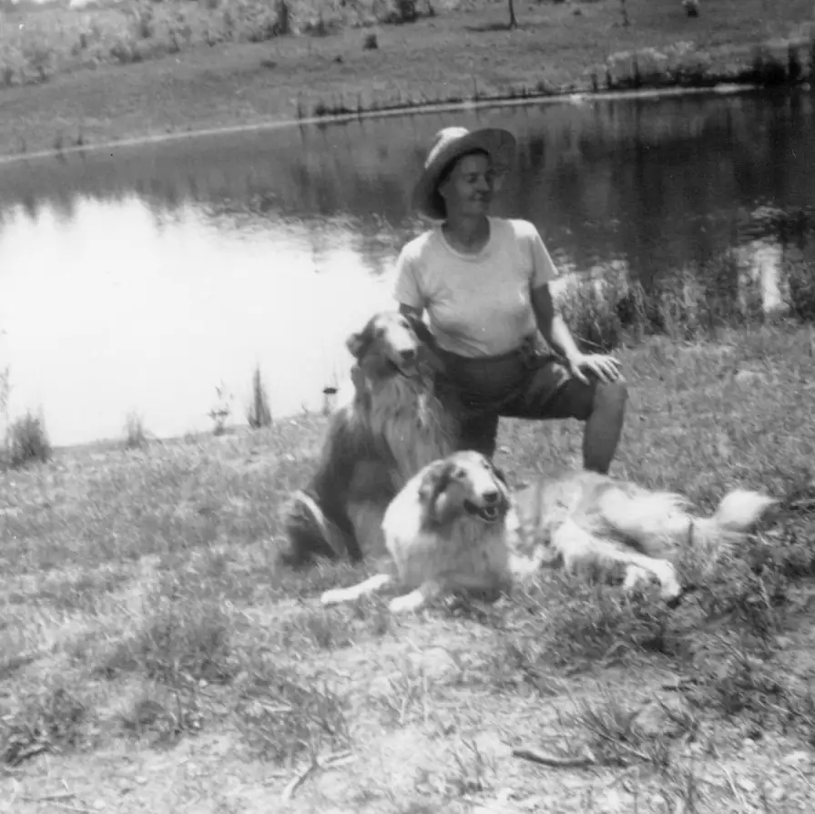

Home / Renshaws / 005 Renshaw Gerald and Georgenna / ren005-00021
ren005-00021
← Return to 005 Renshaw Gerald and Georgenna
← ren005-00020 ren005-00022 →
Georgennea Renshaw with Tippy and Daisy May. This looks like the front yard of Grandpa's house in Centreville, before the lawn grew in, possibly soon after they moved in (around 1952). The camera appears to be facing the road.

Actual size: 2.98" × 2.98" · Scanned at: 300 dpi · 0.8 MP (895×894) · Image date: 4 Apr 2006 · Comment date: 4 Apr 2006
Copyright © 2005–2026 Thomas Krehbiel. Images are freely distributable for personal use. For more information about these images contact Thomas Krehbiel (tkrehbiel@gmail.com).
Photos were scanned at either 300dpi or 600dpi, depending on the quality of the photograph. Slides were scanned at 1800dpi. Documents were scanned at 100dpi or 150dpi. Photoshop enhancements: most images have had their contrast improved. Some color photos were corrected to restore color balance. Some blurry images were mildly sharpened. Occasionally dust, scratches, and blemishes were removed digitally.
{kind=link}